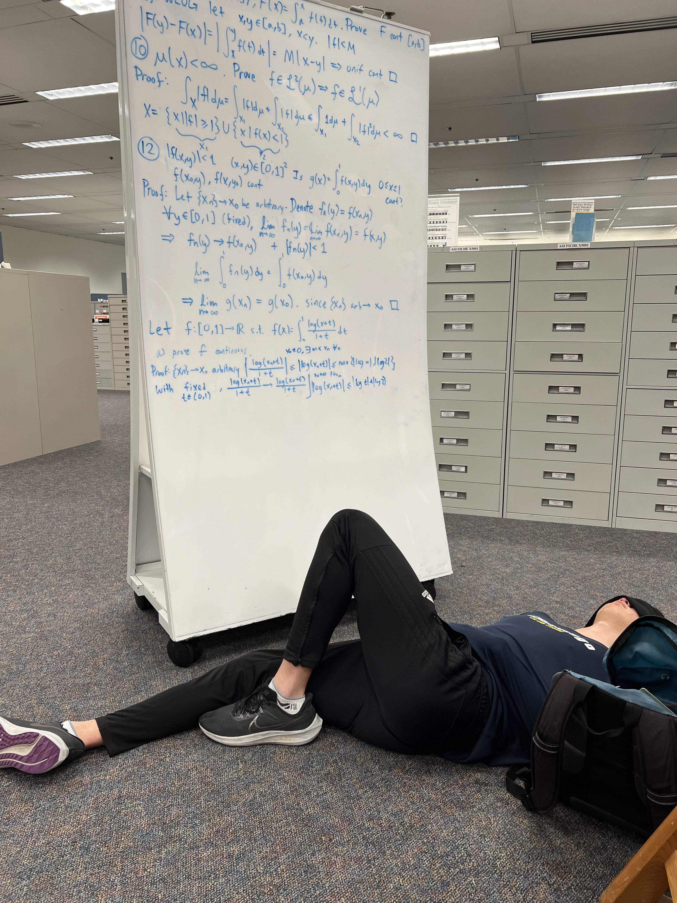

|
Blog Post
Date posted: July 10, 2024
Week 2 of Summer Session 1 2024, Wednesday
Guess who's back? So for the past few weeks I did some cool stuff.
|
 |
Post-finals burnout (June 15th - June 26th):
Quarter ended, but there were still things to do. I did not sleep early.
On the Saturday, I woke up early to help D.W. and H.P. move out stuff. I got paid in free food.
I went to the beach with some friends and just ended up sleeping on the beach for most of the time I was there. Then ate food.
I like to beach for the fresh air, not for the beach part. Came back, and I'm living with D.W. for a few days.
On Sunday, wake up early again to attend my friend's graduation. I think I wrote some emails and planned out the next two weeks.
On Monday, I got KBBQ and went karaoke. Ate well, had fun.
My friend was supposed to drive me back on Tuesday morning, but he had some stuff to figure out.
On Tuesday, it was D.W. first day of work. I got to sleep in that day.
I didn't go out. Stayed inside and planned out the rest of the summer
Wednesday morning, departed SD and died for most of the ride.
Stopped at a Costco and ate the chocolate chip cookie for the first time. Absolutely amazing.
Then ate dosas, basically Indian fried pancakes. Pretty good. Would try again.
Came home, then immediately went to Philz Coffee to study. K.C. is there. Talk a little about optimization problems.
Start on differential geometry. Friend's dad takes me to Costco. Get chicken bake. Friend grills a burger for me.
Burger is amazing. Walk home, and he bikes next to me. Talk about stuff.
<- this is a picture of me taking a break from studying for MATH 140C on Tuesday morning after being awake for 40 hours.
|
The next few days were the same. Sleep at 1 AM. Wake up at 11 AM. Get lunch with an old friend.
Go to Philz/public library. Study for 6-7 hours. Get dinner. Come home. Until the next Thursday.
I'm glad most of my friends are doing well. Most of them have their stuff together, and they are growing as people.
It makes me very happy. Also I got a lot of differential geometry and topology problems done.
Also I played some Valorant with friends. Good breath of fresh air.
I stayed home on the 26th because I wanted to spend time with my family.
|
|
Stuff happens (June 27th):
I sleep at 2 AM after packing. I wake up at 4 AM. My mom drives me to the airport.
I only got to see her for 4 days since she flew in from Korea last week.
I slept throughout the entire flight to SD is alright. I public transport my way back to my apartment.
There is a control theory seminar at 12:30 AM. I'm tired. It's okay.
I chug the two leftover ProBallers and do more differential geometry. I head to the seminar. Free pizza.
One of the new roommates move in the next day. I buy cleaning supplies from Target.
I come back. I watch one YouTube video. My friend's parents made dinner. I eat then directly go to the gym for a pull day.
I began deep-cleaning at 7 PM. One roommate is packing up all of his stuff to move out. Seems busy.
I deep clean the restroom. Other roommate walks in at around 8 PM. Gets on his bed. Gets on his phone.
I am cleaning. I hand-wash the bathroom mats and the shower curtain. They are nasty and haven't been washed in a year.
Roommate in living room still on his phone while sitting on his bed.
It's 9 PM. Cleaning the bathroom counter. Even more nasty. Roommate throws his laundry in washer. Gets on his phone.
I need to throw the handwashed bathroom in the washer, but whatever.
It's 10 PM. I'm cleaning the kitchen.
11 PM, packing roommate leaves. Other roomamte hasn't budged.
4 hours passed, and all this guy did was do his own laundry and sit on his bed while scrolling through his phone.
The washing machine rattled, so I furrow my eyebrows at roommate with concern.
I follow him to check on the washing machine.
This was the opportunity. I tell him everything.
I tried my best to not lash out. Aggression and blaming wouldn't solve anything. I tried to be as objective as possible.
I stated the facts without trying to use connotative language. I expressed my disappointment.
Then I told him this:
“I hope you change as grow as a human.”
I shook his hand. Told him that he was a good roommate to live with since he still kept his area clean.
I ask him to take out the recycling for me at the very least. Nothing more, nothing less.
|
I got told that this was very cruel of me to say. I agree. It is. But sometimes, people need to hear the truth.
Indeed, I didn't ask him for help nor did he use the space often. It is completely justified that he isn't obliged to clean.
However, this is a moral/humane thing. Where's the compassion? If this guy was actively packing up or something, then sure.
I know for a fact that he was not texting anyone (I checked his hand position every 10 minutes).
But the fact that he made no excuse implies that anything he did during those 4 hours were just a waste of time.
I understand that there are some flaws in my views and arguments, but I still believe my emotions are valid.
For most of the four hours, I was thinking how if I should tell him in the first place.
I think about my dad mowing the lawn or doing some moving some heavy stuff.
I think about the scenario systematically. There are some things that are completely invalid to do such as:
social media, gaming alone, rotting, watching TV alone.
This example may be different, but it reflects similar ideas. I don't think anyone should be so selfish, lazy, and unaware.
Humans are simple and their behavior can be generalized.
If he acts like this in the current scenario, then it will reflect similarly to any other case, even towards people he cares about.
It was his and my best interest to tell him about the error in his ways, even given the benefit of the doubt.
Another part of it is probably a fatigue thing.
With 3 hours of sleep, I went to a seminar, finished independent work, hit the gym, and cleaned.
But that doesn't help my case too much. Everyone is entitled to their own standards of living.
Why should I care about how others live? That's a rhetorical question since I shouldn't. I still need to fix how I view others.
(June 28th - July 3rd)
Go to CSE 140 lecture. Do some lab training for COSMOS. Do some extracurricular math work. Research.
Otherwise, I've be SUPER unproductive. I probably played just played Valorant until 3 AM every day.
|
|
(July 4th - )
Then I went to Anime Expo. Very fun. Standing in line wasn't bad at all, but it was very crowded.
Don't know how it wasn't a fire hazard. I think I spent a negotiably reasonable amount of money.
I guess gaslighting myself to not buy anything for the first few days worked pretty well.
I will omit further comments about the people at the convention.
On Saturday night, we went to Round1, and I got addicted to DDR.
On Sunday night, one of the Dance and Rhythm Game Club people drove me to R1 again.
On Monday night, I went to R1 again with some good friends. COSMOS started and I had to deliver a presentation.
On Tuesday night, I went to R1 again with DRGC people.
COSMOS TA job is chill. I'm learning a lot since I skipped the waves and optics class.
I continue to play Valorant to 2 AM each day. On Sunday July 14th, DRGC club took me to an R1 in Temecula. I played DDR for 8 hours.
COSTCO lunch, Red Robin dinner. I had a triple patty burger and bottomless mac and cheese. It was amazing.
That was the greatest burger I had this year. Then I played one more game of DDR.
These people are very cool and nice. I will hang with them more.
|
I can feel myself falling out of touch with my goals. I need to get my shit together. I'm on a PC game ban for the next month.
Or maybe I will just play on weekends. I NEED to get my work done. I guess I was burnt out, but I had enough time for rest.
Now is the time to restore my former glory days.
|